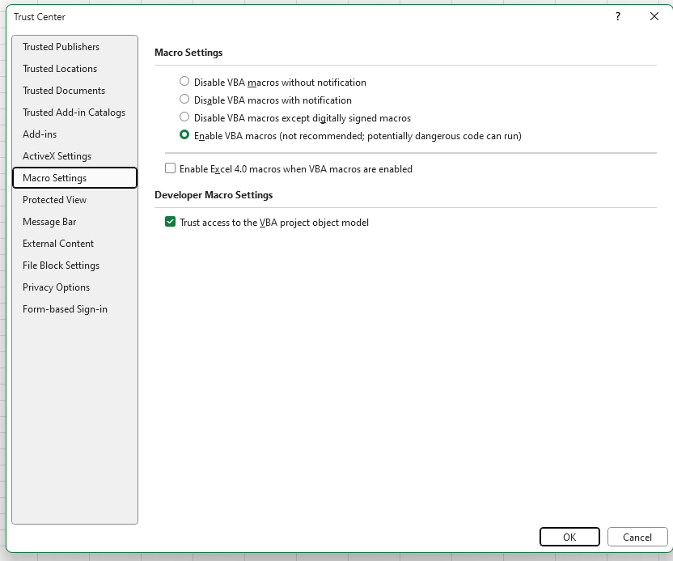

Show case of outbreak-tools usage
Authors: Anton Camacho, Yves Amevoin, Marine Durthaler
Excercises and show-case of outbreak-tools and outbreak-tools-setup.


If you just want to focus on linelist usage, you can download materials for a short tutorial here
Introduction
Outbreak-tools is a set of tools to facilitate the creation and maintainance of Excel linelists. In particular, you can easily:
- define different types of variables (dropdown lists, Excel formulas) their format and data validation rules
- print a register book that perfectly match your linelist. Translate your linelist into several languages
- use pre-defined geo databases for patient origin
- display custom analyses (univariate, bivariate, temporal, spatial) as tables and graphs
- export the entire data or selected variables/lines
- migrate the data to an updated version of the linelist
The linelist is defined in a configuration file called setup. This setup file is then loaded into another file that designs the linelist (the designer). The designer creates the linelist, based on the configurations of the setup.
There are 3 steps to creating a linelist:
Open the setup file and define your needs. The configuration of the file is inspired from Kobo’s XLS forms. No in-depth knowledge of Excel is required. A setup file can be used to create linelists in several languages.
Download geographic data for the targeted area: there is a Geo-App available online to download the geobase for the region of interest (new users must register). The Geo-App is updated as new geographical information becomes available.
Open the designer, load the setup and geobase files, set the options (languages etc) and generate your linelist.
Use-case
In this demo, you’ll familiarise yourself with the various features of the tool and simulate a scenario well known to epidemiologists in the field: upgrading a linelist that already contains data to a new version. This often happens when you want to collect new variables as the epidemic unfold and you need to answer new questions.
The folders contain all the materials needed to perform the exercises.
Prepare the materials
Download and unzip the materials
You can download the exercices bundled in azip file for offline use here.
Unlock files if necessary
Sometimes Excel files with macro downloaded from the web are automatically “blocked” for security reasons. You can unblock the files with the following steps:
- Right click on the file
- Select “Properties”
- Check the Unblock box on the bottom right (if you don’t see such a button on the bottom right it means that the file is already unprotected - for this level of protections).
Activate macros before exercises
If you’re going to run the designer to build a linelist, you’ll need to enable VBA macros in Excel, as well as access to the VBA object model:
- Open Excel
- Display the Developer tab in Excel.
- In the Developer tab, click on Macro security. Check the options as shown in the following image:

Exercise 1: Getting started.
Open the linelist
linelist_measles_en_ex1.xlsblocated in thelinelistfolder. The file password is 5678. It contains a mock measles dataset.Take a quick look at the different sheets to get an overview of the structure of the file.
In the Linelist patients sheet, add one or two patients manually. In particular, use the geo-Helper to enter the patients’ origin (see Data table section of the OutbreakTools ribbon).
Explore univariate, bivariate, temporal and spatial analyses. Use button “Refresh analyses” in the OutbreakTools ribbon to update the analyses.
In the temporal analysis, change the start/end dates as well as the time unit of the analysis.
In the spatial analysis, change the administrative level and divide by the population size to get attack rates (note we don’t have population estimates below the health-zone level).
Go back to the Linelist patients and use the filters to show only patients under 2 years of age. Then go back to the analyses sheets and recalculate (use button “Refresh analyses”).
Export the filtered data using the
anonymous export for MSF(see Export button in the OutbreakTools ribbon). Open and browse the exported file.Finally, print a register book for the
Linelist patients(see the Register book section of the OutbreakTools ribbon).
Exercise 2: Adding new variables
Open the setup file setup_measles_base_ex2.xlsb in the setup folder. This setup file corresponds to the linelist you have been working with. Take a look at the different sheets and see how they relate to the linelist.
Now, we would like to add the following variables:
In the Admission section of Linelist patients sheet, just before the hospitalisation sub-section: a variable called
muac(MUAC) that can take three values: “Green (125+mm)”, “Yellow (115-124mm)”, “Red (< 115mm)”In the Vaccination section of Linelist patients sheet, just after Vaccination against measles:
- A variable called
vacci_measles_doses(Number of doses received) which is a numeric variable. - Create a data validation rule to ensure that this variable remains between 0 and 4.
- A variable called
Translate newly added labels into French (see the Setup Options ribbon and the Setup Translation sheet).
Check the setup for potential errors (see the Setup Options ribbon).
You should normally have a configuration file identical to setup_measles_exercise_two.xlsb in the setup folder. You can also start from this file if you like.
- Regenerate a new linelist named
linelist_measles_en_ex2using the designer located in thedesignerfolder. Save the linelist in the demo folder, making sure you have selected English as the language. You will use the filegeobase-cod-2023-03-13_20230612.xlsxin thegeobasefolder as your geobase.
Sometimes generating the linelist using a ribbon file can fail on Mac. In that case, it will default back to a linelist with buttons instead, but you should be able to pursue the exercices with this linelist. We are working to provide full support for Ribbon on Mac Os.
You might experience screen flickering during the linelist creation process.
- You are now ready to migrate your data from the old to the new linelist. You need to proceed in 2 steps:
First, go back to the linelist
linelist_measles_en_ex1.xlsband remove all filters (see the linelist options ribbon). Then, export the data (use the Export data button in the same ribbon) to a location of your choice. This migration file contains all your data.Second, go back to the new linelist
linelist_measles_en_ex2.xlsband import the migration file (see the button “Import data” from the linelist options ribbon). Look at the importation report and browse the data in the new linelist.
Exercise 3: Adding new analyses
We have decided to add some analyses on the type of discharge (variable outcome) to the linelist.
Open the setup file
setup_measles_base_ex3.xlsblocated in thesetupfolder.In the Analyses sheet, section Univariate Analysis, add a univariate table showing the number of patients by type of discharge. Add percentages and a graph for this table.
In the Analyses sheet, section Time Series Analysis, add a temporal table showing the number of patient by type of discharge and notification date. Add percentages by row and add total.
In the Analyses sheet, section Labels for Time Series Graphs, add a graph title Deaths. In the section Graph on Time Series graph specifications, add the number of deaths per notification date, in bars.
Translate newly added labels into French (see Setup Options ribbon).
Check the setup for potential errors (see Setup Options ribbon).
You should get a configuration file identical to setup_measles_exercise_three.xlsb in the setup folder. You can also start from this file if you like.
Regenerate a new linelist named
linelist_measles_en_ex3using the designer located in thedesignerfolder. Save the linelist in the demo folder, making sure you have selected English as the language. You willl use the filegeobase-cod-2023-03-13_20230612.xlsxin thegeobasefolder as your geobase.You are now ready to migrate your data from the old to the new linelist. You need to proceed in 2 steps:
First, go back to the linelist
linelist_measles_en_ex1.xlsband remove all filters. Then, export the data to a location of your choice. This migration file contains all your data.Second, go back to the new linelist
linelist_measles_en_ex3.xlsband import the migration file. Look at the importation report and browse the data in the new linelist.